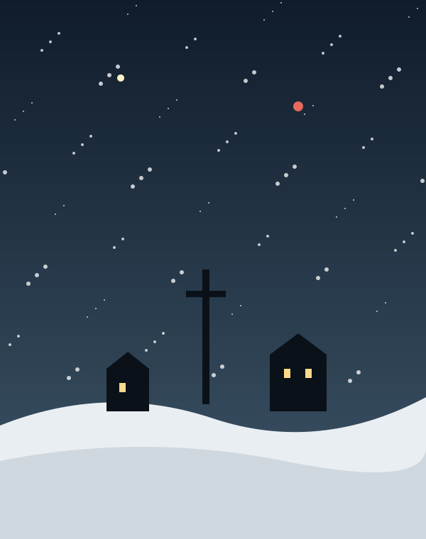

Содержание романа
Оглавление (20 глав)
Часть первая
- Глава I«Велик был год и страшен год…»Часть первая
- Глава II«Итак, был белый, мохнатый декабрь. Он…»Часть первая
- Глава III«В этот ночной час в нижней…»Часть первая
- Глава IV«Как многоярусные соты, дымился и шумел…»Часть первая
- Глава V«Так вот‐с, нежданно‐негаданно появилась третья сила…»Часть первая
- Глава VI«Магазин «Парижский шик» мадам Анжу помещался…»Часть первая
- Глава VII«Глубокою ночью угольная тьма залегла на…»Часть первая
Часть вторая
- Глава VIII«Да, был виден туман. Игольчатый мороз…»Часть вторая
- Глава IX«Полковник Болботун, потеряв семерых казаков убитыми…»Часть вторая
- Глава X«Странные перетасовки, переброски, то стихийно боевые…»Часть вторая
- Глава XI«Повинуясь телефонному голосу, унтер‐офицер Турбин Николай…»Часть вторая
Часть третья
- Глава XII«В маленькой спальне Турбина на двух…»Часть третья
- Глава XIII«Брынь» в последний раз Турбин услыхал…»Часть третья
- Глава XIV«Они нашлись. Никто не вышел в…»Часть третья
- Глава XV«Был вечер. Время подходило к одиннадцати…»Часть третья
- Глава XVI«Многая ле‐ета. Многая лета…»Часть третья
- Глава XVII«Заветной цели, о которой Николка думал…»Часть третья
- Глава XVIII«Турбин стал умирать днем двадцать второго…»Часть третья
- Глава XIX«Пэтурра. Было его жития в Городе…»Часть третья
- Глава XX«Велик был год и страшен год…»Часть третья
Приложение
Текст романа: электронное издание (royallib.com). Предисловие, комментарии и иллюстрации этого издания в сайт не включены. Главы в романе не имеют названий, в оглавлении указаны их первые слова.